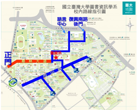

本系設有專業實習圖書館，支援系內師生教學研究所需及本系大學部同學實習，並提供校內外讀者專業服務。實習圖書館內設置助教1名，綜理實習圖書館內各項事務，並協助大三同學從事圖書館實習。圖書館2樓則為兒童讀物區，配合兒童讀物課程，收藏中外文兒童讀物，並展示相關研究訪問成果。
本館館藏書刊資料，以配合本系師生教學研究之需要為主，舉凡圖書館學、資訊科學、社會科學、教育與青少年文學各領域之相關圖書、期刊與視聽資料等均有收藏。目前館藏包含：圖書逾29,000冊/件（含圖書與視聽資料），西文期刊280餘種，中日韓文及大陸期刊逾150種，總共約有期刊430餘種，為目前國內相關系所中，館藏量最豐富之專業圖書館。
本館設有電腦、列印機、影印機，提供校內外讀者查詢圖書館線上目錄資料庫，及影列印與掃描資料。
開放時間
學期中：週一至週五 09:00 ~ 19:00
寒暑假：週一至週五 09:00 ~ 17:00
週六日與國/校定假日不開放
聯絡資訊
電話：(02)3366-2955｜傳真：(02)2363-2859
系圖FB：https://www.facebook.com/LISlibrary
館藏目錄：http://www.lib.ntu.edu.tw
館舍位置
進館須知
1. 本校教職員、學生不限年齡皆可入館，校外人士須年滿18歲。
2. 背包請放置館外置物櫃，電腦包可以攜入館內。
3. 館內禁止飲食。